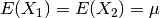
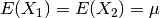

3. Statistics¶
As was discussed briefly in Introduction, any given result from a Monte Carlo calculation, colloquially known as a “tally”, represents an estimate of the mean of some random variable of interest. This random variable typically corresponds to some physical quantity like a reaction rate, a net current across some surface, or the neutron flux in a region. Given that all tallies are produced by a stochastic process, there is an associated uncertainty with each value reported. It is important to understand how the uncertainty is calculated and what it tells us about our results. To that end, we will introduce a number of theorems and results from statistics that should shed some light on the interpretation of uncertainties.
3.1. Law of Large Numbers¶
Let  be an infinite sequence of independent,
identically-distributed random variables with expected values . The sample mean
be an infinite sequence of independent,
identically-distributed random variables with expected values . The sample mean  converges in probability to the true mean, i.e. for all
converges in probability to the true mean, i.e. for all 

3.2. Random Number Generation¶
In order to sample probability distributions, one must be able to produce random
numbers. The standard technique to do this is to generate numbers on the
interval  from a deterministic sequence that has a properties that
make it appear to be random, e.g. being uniformly distributed and not exhibiting
correlation between successive terms. Since the numbers are not truly “random”
in the strict sense, they are typically referred to as pseudo-random numbers,
and the techniques used to generate them are pseudo-random number generators
(PRNGs). Numbers sampled on the unit interval can then be used transformed for
the purpose of sampling other continuous or discrete probability distributions.
from a deterministic sequence that has a properties that
make it appear to be random, e.g. being uniformly distributed and not exhibiting
correlation between successive terms. Since the numbers are not truly “random”
in the strict sense, they are typically referred to as pseudo-random numbers,
and the techniques used to generate them are pseudo-random number generators
(PRNGs). Numbers sampled on the unit interval can then be used transformed for
the purpose of sampling other continuous or discrete probability distributions.
There are a great number of algorithms for generating random numbers. One of the
simplest and commonly used algorithms is called a linear congruential
generator. We start with some random number seed  and a sequence
of random numbers is generated using the following recurrence relation:
and a sequence
of random numbers is generated using the following recurrence relation:
(1)
where  ,
,  , and
, and  are constants. The choice of these
constants will have a profound effect on the quality and performance of the
generator, so they should not be chosen arbitrarily. As Donald Knuth said in his
seminal work The Art of Computer Programming, “random numbers should not be
generated with a method chosen at random”. Some theory should be used.”
Typically, is chosen to be a power of two as this enables
are constants. The choice of these
constants will have a profound effect on the quality and performance of the
generator, so they should not be chosen arbitrarily. As Donald Knuth said in his
seminal work The Art of Computer Programming, “random numbers should not be
generated with a method chosen at random”. Some theory should be used.”
Typically, is chosen to be a power of two as this enables  to be performed using the binary AND operator with a bit mask. The
constants for the linear congruential generator used by default in OpenMC are
to be performed using the binary AND operator with a bit mask. The
constants for the linear congruential generator used by default in OpenMC are
 ,
,  , and
, and  .
.
One of the important capabilities for a random number generator is to be able to
skip ahead in the sequence of random numbers. Without this capability, it would
be very difficult to maintain reproducibility in a parallel calculation. If we
want to skip ahead  random numbers and is large, the cost of
just sampling random numbers to get to that position may be
prohibitively expensive. Fortunately, algorithms have been developed that allow
us to skip ahead in
random numbers and is large, the cost of
just sampling random numbers to get to that position may be
prohibitively expensive. Fortunately, algorithms have been developed that allow
us to skip ahead in  operations instead of
operations instead of  . One
algorithm to do so is described in a paper by Brown. This algorithm relies on
the following relationship:
. One
algorithm to do so is described in a paper by Brown. This algorithm relies on
the following relationship:
(2)
Note that equation (2) has the same form as equation (1)
so the idea is to determine the new multiplicative and additive constants in
operations.